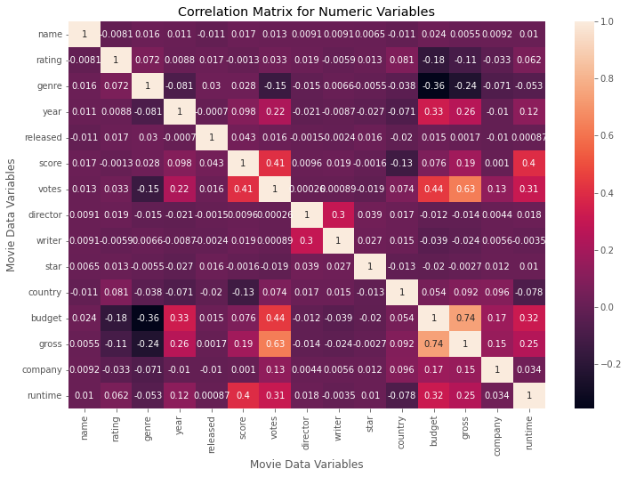

Data Preparation: Used Power Query for data cleaning and transformation, ensuring the dataset was ready for analysis.
Data Modeling: Employed Data Analysis Expressions (DAX) to create calculated columns and measures.
Visualisation: Created interactive reports and dashboards using Power BI's visualisation tools.
Results: Provided insights into market trends and performance, helping stakeholders make data-driven decisions.

Data Exploration: Performed SQL queries to explore the Covid-19 dataset, extracting relevant information such as case counts, death rates, and recovery rates.
Results: Identified key trends and patterns in the Covid-19 data, aiding in understanding the pandemic's impact.

Data Visualization: Utilized Tableau to create an interactive dashboard that visualises Covid-19 statistics across Africa.
Results: Provided a visual representation of Covid-19 data, making it easier to grasp the pandemic's effects in different regions.
Data Cleaning: Employed BigQuery to clean and sort the Bike Share dataset.
Visualisation: Created visuals in Excel and Tableau to display trends and usage patterns.
Results: Offered insights into bike-sharing usage, identifying peak times and popular routes.

Data Analysis: Conducted the entire project in R, including data cleaning, analysis, and visualisation.
Results: Analysed usage patterns and health metrics, providing recommendations for improving BellaBeat's products.

Data Cleaning: Loaded the movie dataset into Python and cleaned it.
Correlation Analysis: Performed correlation tests to identify factors contributing to a movie's success.
Visualisation: Created plots to visualise the correlation between factors.
Results: Determined key factors that influence a movie's success, providing valuable insights for the film industry.
Data Analysis: Explored an accident dataset to identify factors contributing to accidents.
Machine Learning: Used machine learning models to predict accident severity.
Results: Developed a model that predicts accident severity, which could be used to improve road safety measures.